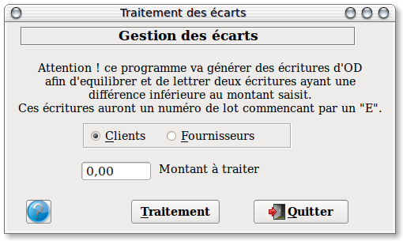

~ Comptabilité et Facturation Laurux ~

~ Comptabilité et Facturation Laurux ~ |
|
|
|

Ce programme est entiérement automatique. Son fonctionnement dépend de
la qualité de la saisie des écritures de trésorerie. Veuillez vous
referer SVP aux explications fournies sur la gestion des écarts lors du
passage des écritures de trésorerie.
Pour lancer ce programme, saisir le montant maximal des écarts à traiter puis cliquer sur le bouton " Traitement ".
Le programme va alors controler , pour chaque compte, les écritures
ayant un numéro de lot commun et ayant une différence inférieure ou
égale au montant saisit.
Si le cas se présente, alors Laurux va
générer une écriture d' od sur le compte du client ou du fournisseur
avec en contre-partie les comptes de régularisation définis dans les
paramètres. Ces écritures seront portées dans le journal défini lui
aussi dans les paramètres.
Parallèlement un lettrage sera effectué.
----------------------------------------------------------------------------------------------------------------------